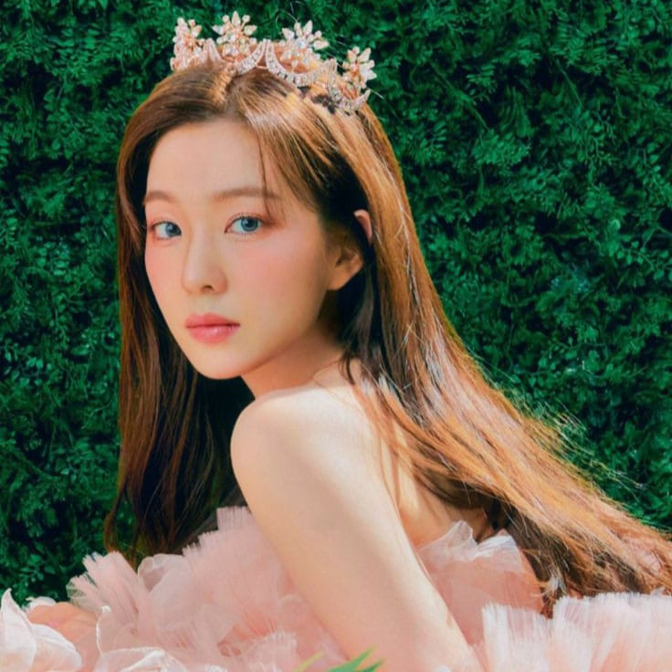
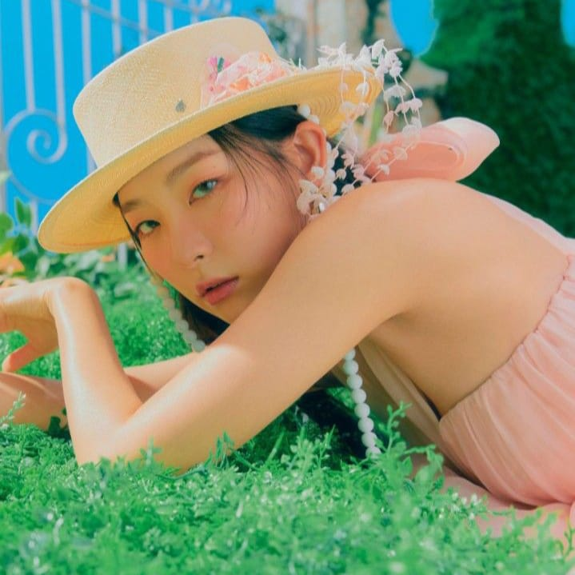
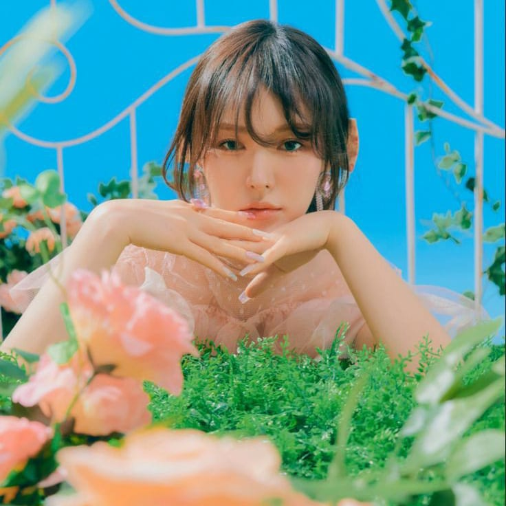
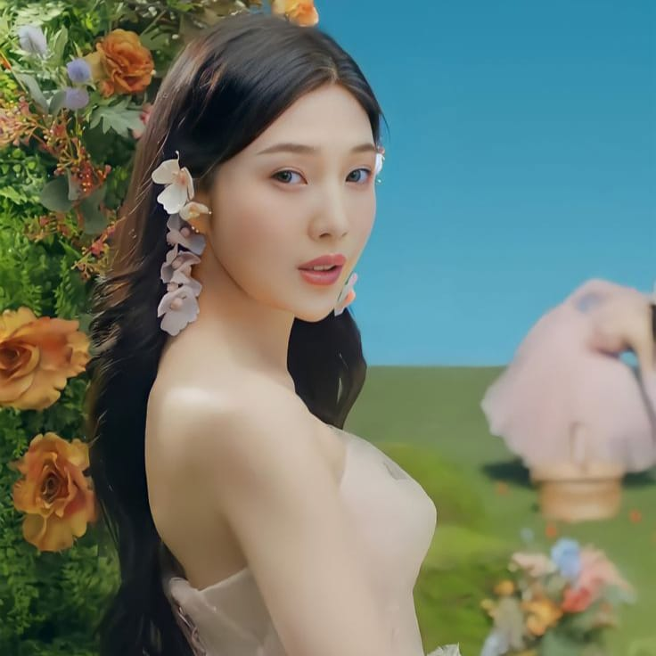
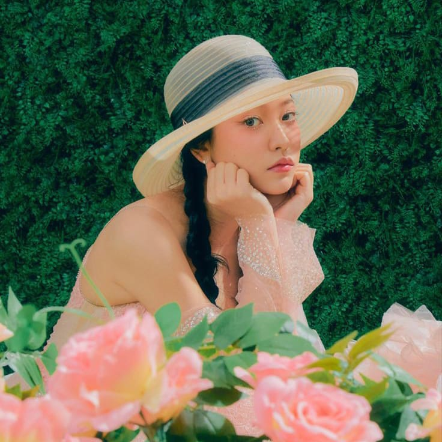
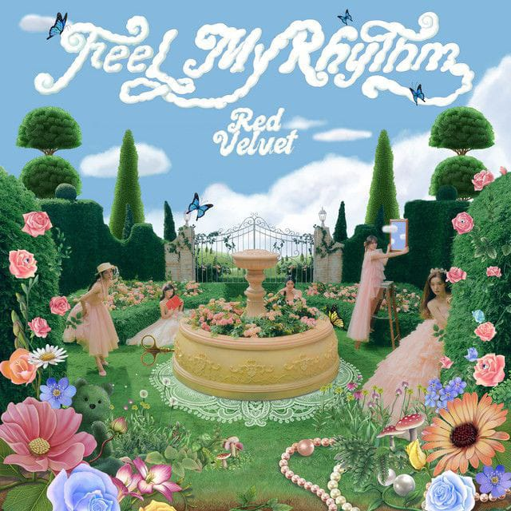
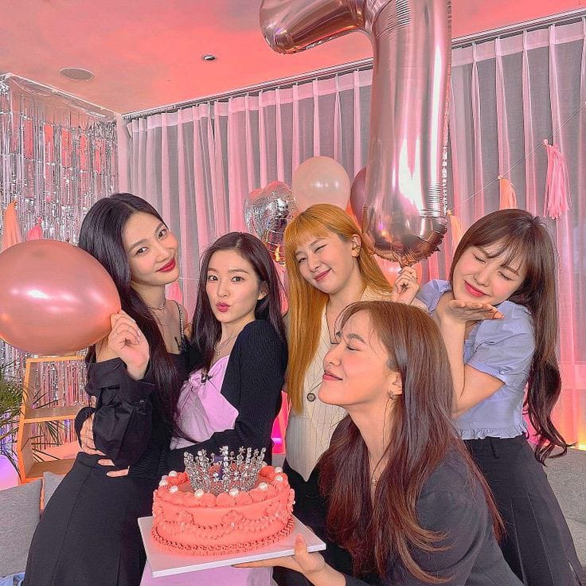

GET TO KNOW
RED VELVET
Salah satu girlband sukses jebolan SM Entertainment adalah RED VELVET yang melakukan debut resmi pada 1 Agustus 2014. RED VELVET beranggotakan 4 orang saat memulai debut perdana dengan single "Happiness" yang ditampilkan pada Music Bank. Girlband ini masuk dalam Gen 2 dimana dikatakan sangat populer di dalam Korea Selatan dan luar Korea Selatan. Beranjak dari debut perdana, SM Ent menambahkan satu anggota termuda ke RED VELVET, jadilah 5 member hingga kini. RED VELVET selalu melakukan comeback yang tidak disangka - sangka oleh penggemarnya dan menjadi perbincanan hangat di media.
RED VELVET selalu melakukan comeback yang tidak disangka - sangka dan selalu memukau bagi fans maupun non-fans nya.
Siapa saja member dari RED VELVET? Apa saja albumnya? Lagu mana yang paling enak didengar? Penghargaan apa saja yang telah mereka dapati?
Kita akan bahas disini ya chingudeul~
IRENE
Anggota pertama sekaligus tertua dan leader di RED VELVET adalah Irene. Bernama asli Bae Ju Hyun lahir di Daegu, 29 Maret 1991. Irene memiliki tinggi badan 160cm dan golongan darah A. Identitas warnanya di RED VELVET adalah merah muda. Irene diperkenalkan pertama kali pada 9 Desember 2013 sebagai traine pra-debut SM Entertainment bersama Lami dan Jaehyun NCT. Posisi di RED VELVET sebagai leader, visual, center, main rapper, lead dancer, dan sub vocalist. Hal menariknya, Irene mengaku tidak menyukai ayam dan Irene penggemar kopi.
Instagram Irene
SEULGI
Seulgi adalah anggota kedua RED VELVET yang diperkenalkan pada Desember 2013 melalui traine pra-debut SM Ent. Seulgi memiliki nama asli Kang Seul Gi lahir di Ansan, 10 Februari 1994. Posisi Seulgi adalah main dancer dan lead vocalist. Seorang perfeksionalis yang ceria ekspresif ini memiliki tinggi badan 164cm dan golongan darah A, official color Seulgi adalah kuning. Hal menariknya, saking semangat berlatih Seulgi pernah kehilangan suaranya, dengan kejadian ini ia berlatih dengan konsisten dan lebih baik dalam menjaga vocalnya.
Instagram Seulgi
WENDY
Anggota ketiga yang memiliki tahun kelahiran sama dengan Seulgi adalah Wendy. Perempuan cantik berkulit putih menyilaukan ini lahir di Seoul, 21 Februari 1994 dengan nama asli Wendy Son. Wendy memiliki tinggi badan 160cm dan bergolongan darah O. Posisinya di RED VELVET adalah main vocalist, tidak diragukan suaranya memang sangat - sangat bagus. identitas warna Wendy adalah biru. Mengenyam pendidikan di luar Korea dari kecil hingga remaja, Wendy tidak terlalu fasih dalam bahasa Korea namun sangat pandai berbahasa Inggris. Wendy pandai bermain gitar dan mengisi soundtrack dari drama Who Are You: School 2015.
Instagram Wendy
JOY
Selanjutnya anggota yang gagal menjadi maknae atau anggota paling muda adalah Joy. Lahir di Pulau Jeju, 3 September 1996 dengan nama aslinya Park Soo Young. Posisi Joy di RED VELVET adalah sub vocalist dan lead rapper. Memiliki tinggi badan 168cm dan golongan darah A. Joy pernah mengikuti Show: We Got Married bersama Sungjae BTOB dimana berlakon seperti layaknya pasutri. Hal menarik tentang Joy, ia sangat suka selfie. Identitas warna Joy adalah hijau.
Instagram Joy
YERI
Anggota terakhir yang diperkenalkan adalah Yeri, sekaligus menjadi the real maknae from RED VELVET. Yeri memulai debut perdana pada 2015 pada MV "Ice Cream Cake" bersama 4 anggota RED VELVET sebelumnya. Yeri lahir di Seoul, 5 Maret 1999. Dikenal dengan kepribadian yang ceria dan friendly abis membuat Yeri banyak memiliki penggemar sekaligus teman di kalangan idol. Bergolongan darah O dengan tinggi badan 160cm. Posisinya sebagai sub rapper, sub vovalist, dan maknae. Yeri memiliki nama panggilan unik, Yeriana karena sangat menyukai Ariana Grande. Official color Yeri adalah Ungu.
Instagram Yeri
Album RED VELVET
| No. |
Album |
Tahun |
Jumlah Lagu |
| 1 |
The 1st Album "The Red" |
2015 |
10 lagu |
| 2 |
2nd Mini Album "The Velvet" |
2016 |
8 lagu |
| 3 |
3rd Mini Album "Russian Roulette" |
2016 |
7 lagu |
| 4 |
4th Mini Album "Rookie" |
- |
6 lagu |
| 5 |
5th Mini Album "Red Summer" |
2017 |
5 lagu |
| 6 |
The 2nd Album "Perfect Velvet" |
2017 |
9 lagu |
| 7 |
1st Repackage Album "The Perfect Red Velvet" |
2018 |
12 lagu |
| 8 |
6th Mini Album "Summer Magic" |
2018 |
7 lagu |
| 9 |
7th Mini Album "RBB" |
2018 |
5 lagu |
| 10 |
8th Mini Album "The ReVe Festival Day 1" |
2019 |
6 lagu |
| 11 |
9th Mini Album "The ReVe Festival Day 2" |
2019 |
6 lagu |
| 12 |
2nd Repackage Album "The ReVe Festival Finale" |
2019 |
16 lagu |
| 13 |
10th Mini Album "Queendom" |
2021 |
6 lagu |
| 14 |
11th Mini Album "The ReVe Festival 2022 - Feel My Rhythm" |
2022 |
6 lagu |
| 15 |
12th Mini Album "The ReVe Festival 2022 - Birthday" |
2022 |
5 lagu |
Rekomendasi Lagu RED VELVET
Berikut adalah lagu rekomendasi dari aku yang easy listening guys, cocok didengar saat belajar, beres - beres rumah, olahraga, dan santai - santai.
- Happiness
- Ice Cream Cake
- Peek-A-Boo
- Bad Boy
- Russian Roulette
- Power Up
- Psycho
- Feel My Rhythm
Penghargaan RED VELVET

- Asia Artist Awards
- Gaon Chart Music Awards
- Golden Disc Awards
- KBS World Global Fan Awards
- Korea Popular Music Awards
- Melon Music Awards
- Mnet Asian Music Awards
- Seoul Music Awards
- Soribada Best K-Music Awards
- V Live Awards
Jangan lupa streaming terus yaa di Spotify dan Youtube RED VELVET